\(T_{aus}\) … Ausschaltschwelle
\(T\) … Temperatur
\(T_{ein}\) … Einschaltschwelle
\(T_{ref}\) … Referenz Temperatur
In diesem Teil des Skriptums geht es darum, wie wir Maschinen und Schaltungen dazu bringen, trotz Störeinflüssen das gewünschte Verhalten zu zeigen. Zum Beispiel soll ein Tempomat des Autos die Geschwindigkeit halten, trotz starkem Gegenwindes. Es werden die Grundlagen der Regelungstechnik vermittelt. Dabei wird das theoretische Wissen anhand konkreter Anwendungen erarbeitet.
Viele Aufgaben von Maschinen können auch durch Steuerungen umgesetzt werden. Eine Regelung erlaubt es aber, auf unerwünschte Einflüsse, sogenannte Störgrößen, zu reagieren. Als Beispiel soll der Tempomat (Geschwindigkeitsregelanlage) des Autos dienen. Die Aufgabe des Tempomats ist es, die Geschwindigkeit (Regelgröße) konstant zu halten. Als unerwünschte Einflüsse (Störgrößen) sind alle physikalischen Größen zu betrachten, welche die Geschwindigkeit beeinflussen. Beispiele sind die Steigung der Straße und Wind.
Die Geschwindigkeit des Autos wird über die Leistung (Stellgröße) bestimmt. Führt die Straße bergauf, wird mehr Leistung für die gleiche Geschwindigkeit benötigt. Es muss also die Leistung laufend angepasst werden, um eine konstante Geschwindigkeit zu erhalten. Bei einer Steuerung würde eine Leistung eingestellt werden und sich daraus eine Geschwindigkeit ergeben. Dies wäre jedoch nur für einen voreingestellten Fall identisch mit der gewünschten Geschwindigkeit.
| Bezeichnung | Formelzeichen | Erklärung |
|---|---|---|
| Regelgröße | y(t), Y(s) | Ausgangsgröße des Regelkreises, die gemessen und kontrolliert wird. |
| Sollwert, Führungsgröße | w(t), W(s) | Gewünschter Zielwert der Regelgröße. Der Regler versucht, diesen Wert zu erreichen. |
| Stellgröße | u(t), U(s) | Vom Regler ausgegebene Größe, die das System beeinflusst. |
| Störgröße | z(t), Z(s) | Eine äußere Größe, die den Prozess stört und die der Regler kompensieren muss. |
| Regelabweichung | e(t), E(s) | Differenz zwischen Sollwert und Istwert der Regelgröße. |
| Strecke | \(G(s)\) | Der zu regelnde Prozess oder das System. |
| Regler | \(R(s)\) | Die Einrichtung oder der Algorithmus, der die Stellgröße bestimmt. |
| Sensor | \(M(s)\) | Die Einrichtung oder der Algorithmus, der die Ausgangsgröße bestimmt. |
Regeln ist ein Vorgang, bei dem der IST-Wert einer Größe gemessen und, durch Nachstellen der Stellgröße, dem SOLL-Wert angeglichen wird.
Dazu wird das Ergebnis an den Eingang zurückgeführt und vom Sollwert subtrahiert. Es entsteht eine Rückkopplung. Durch das negative Vorzeichen handelt es sich um eine Rückkopplung im Spezialfall einer Gegenkopplung. Die Differenz aus dem Sollwert und dem zurückgeführten Istwert ist die sogenannte Regelabweichung, welche über den Regler zur Stellgröße wird. Die Stellgröße ist nun die physikalische Größe, welche die Regelstrecke zum gewünschten Verhalten führt.
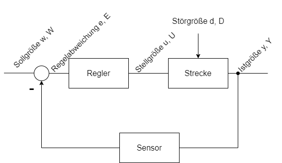
Es kann zwischen zwei Arten von Reglern unterschieden werden. Erstere sind einfache Regler, welche die Stellgröße nur zwischen verschiedenen Zuständen hin- und herschalten können. Zum Beispiel Ein / Aus. Oder die Gänge eines Automatikgetriebes. Diese Regler werden unstetige Regler genannt. Unstetige Regler können gut mittels Hysteresen beschrieben werden.
Der zweite Typ von Regler kann die Stellgröße kontinuierlich anpassen. Diese Regler werden stetige Regler genannt. Stetige Regler können gut mit mathematischen Gleichungen im Laplace-Bereich beschrieben werden.
Klassische unstetige Regler sind Bimetallschalter. Diese werden zum Beispiel bei Heizlüftern eingesetzt.
Ist der Raum und damit das Bimetall kalt, so ist der Kontakt geschlossen und der Lüfter läuft. Wird die Raumluft und damit das Bimetall warm, wird der Kontakt geöffnet und der Lüfter hört auf zu heizen.
\(T_{aus}\) … Ausschaltschwelle
\(T\) … Temperatur
\(T_{ein}\) … Einschaltschwelle
\(T_{ref}\) … Referenz Temperatur
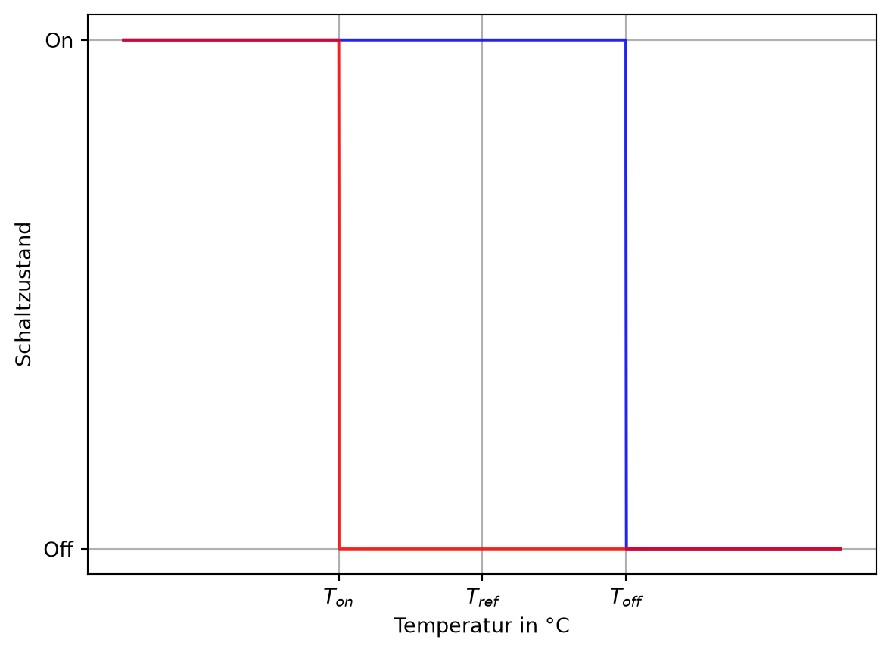
Der Zweipunktregler kann, wie der Name schon sagt, die Stellgröße zwischen zwei Zuständen schalten. Zum Beispiel die Heizung einschalten, wenn die Temperatur zu niedrig ist und wieder Abschalten, wenn die Temperatur hoch genug ist. Siehe dazu die Kennlinie Abbildung 9.2. Die Kennlinie stellt eine Hysterese dar. Die Umsetzung ist auch mittels Operationsverstärker möglich.
Für das Verständnis von stetigen Reglern ist es hilfreich, die Regelungstechnik mathematisch zu betrachten, da sich ein Regler gut mit Formeln beschreiben und erklären lässt. In einem eigenen Kapitel wird behandelt, wie Regler praxisnah implementiert werden können.
Der oben gezeigte Regelkreis Abbildung 9.1 lässt sich mathematisch als Übertragungsfunktion beschreiben. Hier werden ausschließlich LTI-Systeme mit einem Eingang und einem Ausgang betrachtet: SISO (Single Input, Single Output). LTI steht für linear und zeitinvariant (Linear Time-Invariant). Jeder Block kann mit einer Übertragungsfunktion beschrieben werden; bei einer geeigneten linearen Struktur lässt sich auch die Zusammenschaltung mehrerer Blöcke als Übertragungsfunktion darstellen. Der physikalische Prozess wird dabei als Regelstrecke bezeichnet; Blöcke können aber ebenso Regler, Sensoren oder andere Systeme darstellen.
Der PID Regler ist ein stetiger Regler, der sich aus drei Teilen zusammensetzt. Er ist der am häufigsten verwendete stetige Regler in der Regelungstechnik. Wobei der D Anteil in der Praxis oft weggelassen wird.
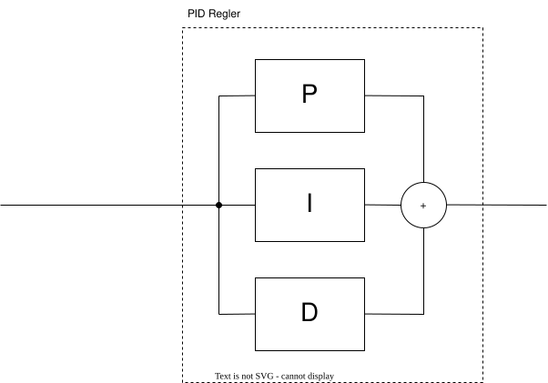
Für die klassische Auslegung mit einer Übertragungsfunktion wird eine hinreichend lineare, zeitinvariante SISO-Strecke angenommen. Nichtlineare Systeme können oft in der Nähe eines Arbeitspunktes linearisiert werden. Die drei Anforderungen gelten für dieses Berechnungsmodell.
Ein PID-Regler selbst kann auch digital und damit in abgetasteten Systemen implementiert werden. Für instabile, stark nichtlineare oder zeitvariante Strecken sind jedoch zusätzlich geeignete Maßnahmen erforderlich.
Die Übertragungsfunktion beschreibt den Zusammenhang zwischen Ausgang und Eingang.
Ist die Übertragungsfunktion bekannt, so kann die Strecke und deren Verhalten (der Ausgang) auf verschiedene Eingänge berechnet werden. Dies wird auch Simulation genannt. Für Marketingzwecke könnte die Übertragungsfunktion auch als einfache Form eines “digitalen Zwillings” bezeichnet werden. Ist die Übertragungsfunktion mathematisch beschrieben, können Regler entworfen und getestet werden, ohne das tatsächliche physikalische Modell benutzen zu müssen. Dies ist speziell sinnvoll, wenn das physikalische System für Testzwecke nicht zur Verfügung steht bzw. nicht für Testzwecke geeignet ist. Eine Strecke (=physikalisches System) steht z.B. nicht zur Verfügung, wenn:
Eine Strecke (=physikalisches System) ist nicht geeignet für Testzwecke wenn z.B.:
Als Streckenidentifikation wird der Vorgang beschrieben, von einem physikalischen System das mathematische Modell und die Übertragungsfunktion zu erstellen. Zwei Methoden, wie dieses Ziel erreicht werden kann, werden hier beschrieben.
\[ V = \frac{A}{E} \tag{9.1}\]
\(A\) … Ausgang
\(V\) … Verarbeitung, die Übertragungsfunktion
\(E\) … Eingang
Gängige Bezeichnungen der Übertragungsfunktion der einzelnen Blöcke sind wie folgt.
\(G\) … Übertragungsfunktion der zu regelnden Strecke
\(M\) … Übertragungsfunktion des Sensors
\(R\) … Übertragungsfunktion des Reglers
Aus den physikalischen Zusammenhängen kann die Übertragungsfunktion berechnet werden. Die komplexe Zeigerdarstellung mit einer festen Frequenz ist für sinusförmige Dauersignale geeignet. Für zeitveränderliche Signale werden die physikalischen Gleichungen in Differentialform oder als Zustandsmodell beschrieben.
Um die Mathematik möglichst einfach zu halten, wird in der Regelungstechnik im Laplace-Bereich gearbeitet. Dadurch ist es nicht notwendig, die Differenzialgleichung bei physikalischen Systemen, die durch eine Differenzialgleichung beschrieben werden, zu lösen.
Ein Beispiel, wie eine mathematische Streckenidentifikation abläuft, ist in Kapitel Kapitel 9.5.5 zu finden.
Manche Systeme sind zu komplex, um sie mathematisch zu beschreiben. Bei anderen ist das Innenverhalten nicht bekannt. In diesen Fällen kann die messtechnische Ermittlung eines Modells beziehungsweise einer Übertragungsfunktion herangezogen werden.
Dabei wird am Eingang der Strecke ein Testsignal aufgeschaltet und der Ausgang gemessen. Aus diesen Messdaten kann die Übertragungsfunktion, ein mathematisches Modell, der Strecke erstellt werden.
oder die Anstrengung der Faulen.
Um eine Übertragungsfunktion zu berechnen, muss der Ausgang durch den Eingang dividiert werden. Wird das physikalische System durch eine lineare Gleichung beschrieben, ist das sehr einfach möglich und die Laplace-Transformation ist nicht notwendig. Ein Beispiel dafür ist das Ohm’sche Gesetz.
\[ R_{ohm} = \frac{U}{I} \tag{9.2}\]
\(R_{ohm}\) … Ohm’scher Widerstand als Übertragungsfunktion
\(I\) … Strom am Widerstand als Eingang
\(U\) … Spannung am Widerstand als Ausgang
Wird das physikalische System aber durch eine Differentialgleichung beschrieben, wie zum Beispiel bei einem Tiefpass, so wäre es notwendig zuerst die Differentialgleichung zu lösen um die Übertragungsfunktion zu berechnen. Hier bietet die Laplace-Transformation eine erhebliche Erleichterung. Wird die Übertragungsfunktion im Laplace-Bereich angeschrieben, ergeben sich weitere Vorteile, wenn es später darum geht einen Regler zu entwerfen und die Stabilität einer Strecke zu beurteilen.
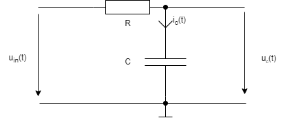
\[ i_{c}{\left(t \right)} = C \frac{d}{d t} u_{c}{\left(t \right)} \tag{9.3}\]
\[ i_{c}{\left(t \right)} = \frac{- u_{c}{\left(t \right)} + u_{in}{\left(t \right)}}{R_{ohm}} \tag{9.4}\]
Durch Gleichsetzen von Gleichung 9.3 und Gleichung 9.4 ergibt sich die allgemeine Differenzialgleichung erster Ordnung für den Tiefpass.
\[ C \frac{d}{d t} u_{c}{\left(t \right)} = \frac{- u_{c}{\left(t \right)} + u_{in}{\left(t \right)}}{R_{ohm}} \tag{9.5}\]
\(t\) … Zeit
\(C\) … Kapazität
\(R_{ohm}\) … Ohmscher Widerstand
\(u_{c}{\left(t \right)}\) … Ausgangsspannung
\(i_{c}{\left(t \right)}\) … Strom
\(u_{in}{\left(t \right)}\) … Eingangsspannung
Müsste nun von dieser Differentialgleichung die Übertragungsfunktion, also \(G=Ausgang/Eingang\), angegeben werden, so müsste zunächst die Differentialgleichung gelöst werden.
Die Laplacetransformation bietet hier einen alternativen Weg. Sie erleichtert insbesondere die Kombination von Blöcken und Aussagen über das Systemverhalten.
Die tiefere Mathematik der Laplacetransformation überlassen wir den Mathematiker:innen und den ersten Semestern eines Studiums. Hier dient sie als Werkzeug zur Vereinfachung von Berechnungen. Dazu werden nur die wichtigsten Grundregeln benötigt.
Vereinfacht überführt die Laplacetransformation eine Funktion aus dem Zeitbereich mit der Variablen \(t\) in den Laplacebereich beziehungsweise \(s\)-Bereich. Die komplexe Variable \(s\) wird erst für Frequenzgangbetrachtungen als \(s=j\omega\) eingesetzt. Die Transformation erfolgt in vielen Fällen mithilfe einer Tabelle. Hier werden nur ausgewählte Signale und mathematische Operationen angeführt.
| Zeitbereich \(x(t)\) | Laplacebereich \(X(s)\) | Bemerkung |
|---|---|---|
| \(\frac{d \ x(t)}{d \ t}\) | \(s \cdot X(s) - x(0)\) | Transformation der Ableitung nach der Zeit, \(x(0)\) ist dabei der Wert zum Zeitpunkt Null. Bei einem Kondensator wäre dies zum Beispiel der Ladezustand zu Beginn. |
| \({ \int x(t) \, d \ t}\) | \(\frac{1}{s} \cdot X(s)\) | Transformation der Integration über der Zeit |
| \(\delta (t)\) | \(1\) | Transformation des Impulses |
| \(\sigma (t)\) | \(\frac{1}{s}\) | Transformation des Sprunges |
| \(e^{at}\) | \(\frac{1}{s -a}\) | |
| \(\frac{1}{a} e^{-t/a}\) | \(\frac{1}{1 + as}\) | für \(a>0\) |
Wird nun Gleichung Gleichung 9.5 mittels der Tabelle Tabelle 9.1 transformiert, ergibt sich durch Umformen die Übertragungsfunktion. Der Kondensator wird als anfangs entladen angenommen; also ist \(u_C(0)=0\).
\[ C U_{C} s = \frac{- U_{C} + U_{IN}}{R_{ohm}} \tag{9.6}\]
\[ G = \frac{U_{C}}{U_{IN}} \tag{9.7}\]
\[ G = \frac{1}{C R_{ohm} s + 1} \tag{9.8}\]
Testsignale werden gezielt am Streckeneingang aufgeschaltet, um das Dynamikverhalten zu untersuchen. Häufig werden Sprung-, Impuls-, Rampen- oder Sinussignale verwendet.
Aus Eingang und Ausgang wird bestimmt, ob die Strecke beispielsweise statisch, verzögert, integrierend, schwingungsfähig oder totzeitbehaftet ist. Zeitkonstanten, Verstärkung und Pole charakterisieren das Verhalten. ##### Interaktiver PT2 Simulator
Bei der messtechnischen Identifikation wird das Ausgangssignal auf ein definiertes Eingangssignal gemessen. Aus den Daten wird ein mathematisches Modell der Strecke und daraus die Übertragungsfunktion bestimmt.
Werden Blöcke kombiniert, können die resultierenden Übertragungsfunktionen berechnet werden.
Zur Vereinfachung kann die Übertragungsfunktion des Sensors mit \(M=1\) angenommen werden, wenn dieser im Verhältnis zur Strecke und zum Regler vernachlässigbar ist. Dies ist zum Beispiel der Fall, wenn der Sensor viel schneller ist als die Strecke und der Regler. Diese Voraussetzung ist für viele Systeme gegeben.
Für den Regelkreis, Abbildung 9.1, ergeben sich folgende Möglichkeiten.
Die Führungsübertragungsfunktion gibt das Verhältnis zwischen Sollgröße und Istgröße an. Sie beschreibt damit das Verhalten des Regelkreises mit der Sollgröße als Eingang und der Istgröße als Ausgang. Ist eine Regelstrecke ideal, so ist die Führungsübertragungsfunktion gleich Eins.
\[ F_{w} = \frac{G R}{G M R + 1} \tag{9.9}\]
\(F_{w}\) … Führungsübertragungsfunktion
Die Schleifenübertragungsfunktion ist die Übertragungsfunktion des offenen Regelkreises, also ohne Rückkopplung, und ist im Laplace-Bereich eine einfache Multiplikation.
\[ F_{o} = G M R \tag{9.10}\]
\(F_{o}\) … Schleifenübertragungsfunktion
Die Störübertragungsfunktion beschreibt, wie sich die Störgröße auf den Ausgang auswirkt.
\[ F_{s} = \frac{G}{F_{o} + 1} \tag{9.11}\]
\(F_{s}\) … Störübertragungsfunktion
Eingangssignal \(w\)
Ausgangssignal \(y\)
Regelabweichung \(e\)
Stellgröße \(u\)
Reglereinstellungen:
Streckeneinstellungen:
Auswahl Eingangssignal:
Simulationseinstellungen:
Dieses Kapitel beschreibt sechzehn Systeme: fünf Grundsysteme, deren Übertragungsfunktionen direkt aus physikalischen Bauelementewerten hergeleitet werden, fünf Systeme aus konkreten technischen Anwendungen, den als Nummer 11 angefügten RLC-Reihenkreis sowie fünf Systeme mit kombinierten Effekten (Teil IV), in denen mehrere physikalische Effekte gleichzeitig wirken — eine Nullstelle in der rechten s-Halbebene, ein Integrierer hinter einer Totzeit, eine differenzierende Nullstelle, eine doppelte Verzögerung mit Totzeit und Coulomb-Reibung. Die Skripte generate_step_responses.py, generate_step_responses_applications.py und generate_step_responses_multi_effect.py bauen jede Übertragungsfunktion \(G(s)\) mit sympy, regen sie mit einem realistischen Eingangssprung an (reale Amplituden wie 5 V, 500 N, 2 L/s — kein normierter 0-auf-1-Sprung), berechnen die Sprungantwort analytisch als
\[y(t) = \mathcal{L}^{-1}\left\{\frac{G(s)}{s}\right\},\]
und speichern sie als CSV-Datei (time_s, step_response, 2001 Stützpunkte). Die einzige Ausnahme ist System 16 (Coulomb-Reibung): Reibung ist nichtlinear und verletzt die Superposition, deshalb wird dieses System numerisch integriert (RK4 mit Stick-Erkennung). Jedes System wird in seinem eigenen Zeitfenster abgetastet — etwa 4 bis 5 Zeitkonstanten —, sodass CSV und Plot den Übergangsvorgang dort zeigen, wo er passiert, und nicht lange Strecken eingeschwungener Werte. Kurznummerierte Kopien aller sechzehn CSV-Dateien liegen im Ordner csv/ (01.csv … 16.csv); die 1-kΩ-Varianten 01_a, 02_a und 11_b werden in Teil III beschrieben. Die im gesamten Kapitel verwendeten Standard-Modellklassen — PT1, PT2, Integrierer, Totzeit, differenzierende und nichtminimalphasige Nullstellen, Totzone — sind in der folgenden Toolbox zusammengestellt.
Jede Übertragungsfunktion in diesem Kapitel ist aus einer kleinen Menge von Standardelementen aufgebaut. Dieser Abschnitt sammelt sie: die Formel, das Pol-/Nullstellenmuster, die Form der Sprungantwort und die Systeme, in denen jedes Element vorkommt. Das statische Verhalten wird immer durch die Gleichspannungsverstärkung \(K = G(0)\) festgelegt — der Endwert eines stabilen Systems ist \(y(\infty) = K\cdot u_0\) (Endwertsatz) — deshalb ist die Amplitude \(u_0\) des Eingangssprungs in jedes \(G(s)\) dieses Kapitels einbezogen.
\[G(s) = \frac{K}{\tau s + 1}, \qquad y(t) = K\left(1 - e^{-t/\tau}\right)\]
01_a, 02_a.\[G(s) = \frac{K}{(\tau_1 s + 1)(\tau_2 s + 1)}, \qquad y(t) = K\left[1 - \frac{\tau_2\,e^{-t/\tau_2} - \tau_1\,e^{-t/\tau_1}} {\tau_2 - \tau_1}\right]\]
11_b (\(\zeta = 50\): so stark gedämpft, dass die Pole wieder reell sind).\[G(s) = \frac{K\,\omega_n^2}{s^2 + 2\zeta\omega_n s + \omega_n^2},\qquad y(t) = K\left[1 - e^{-\zeta\omega_n t}\left(\cos\omega_d t + \frac{\zeta}{\sqrt{1-\zeta^2}}\sin\omega_d t\right)\right]\]
\[G(s) = \frac{K}{s}, \qquad y(t) = K\,t\]
\[G(s) = \frac{K}{s\,(T s + 1)}, \qquad y(t) = K\left[t - T\left(1 - e^{-t/T}\right)\right]\]
\[G(s) = e^{-L s}\]
Eine Nullstelle ist eine Zählerwurzel und formt den Übergangsvorgang, ohne den Endwert zu ändern. Ein reiner Differenzierer \(G = K_D s\) würde auf einen Sprung mit einem Impuls antworten (allein unphysikalisch); die praktische Form ist ein Lead-Glied mit einer Nullstelle in der linken s-Halbebene bei \(-1/T\). In einer Sprungantwort wirkt eine solche Nullstelle wie der D-Anteil eines PID-Reglers:
In System 14 liefert die Dämpferkraft \(d\,\dot x\) die Nullstelle bei \(-k/d = -159\,\mathrm{rad/s}\): die übertragene Kraft beginnt mit der Steigung \(dF/m = 5040\,\mathrm{N/s}\), während die Feder allein (ohne Nullstelle) im ersten Augenblick nichts übertragen würde.
\[G(s) = K\,\frac{1 - s/\omega_z}{\ldots}, \qquad \omega_z > 0\]
Die Totzone ist keine Übertragungsfunktion, weil das Element keine Superposition besitzt: es ist eine statische Nichtlinearität. Ihre zwei Gesichter:
| Element | Formel | Signatur der Sprungantwort | Systeme |
|---|---|---|---|
| PT1 | \(\frac{K}{\tau s + 1}\) | exponentiell, 63.2 % bei \(\tau\) | 1, 2, 6, 7, 01_a, 02_a |
| PT2 aperiodisch | \(\frac{K}{(\tau_1 s + 1)(\tau_2 s + 1)}\) | s-förmig mit Wendepunkt | 4, 5, 15, 11_b |
| PT2 unterdämpft | \(\frac{K\omega_n^2}{s^2 + 2\zeta\omega_n s + \omega_n^2}\) | Überschwingen + Nachschwingen | 3, 8, 11, 14, 16 |
| I (Integrierer) | \(\frac{K}{s}\) | Rampe, kein Endwert | 9, 13 |
| I + PT1 | \(\frac{K}{s(Ts+1)}\) | Rampe mit flachem Anfang | 9 |
| Tt (Totzeit) | \(e^{-Ls}\) | null bis \(t = L\) | 10, 13, 15 |
| D-/Lead-Nullstelle | \(1 + sT\) (Nullstelle bei \(-1/T\)) | sofortiger steiler Anstieg | 14 |
| RHP-Nullstelle | \(1 - s/\omega_z\) (Nullstelle bei \(+\omega_z\)) | inverse Antwort (zuerst Einbruch) | 12 |
| Totzone | \(\|u\| \le b \Rightarrow y = 0\) (nichtlinear) | keine Bewegung unterhalb der Schwelle, endliches Einschwingen, Fehlerband | 16 |
Mit diesen neun Blöcken lässt sich jedes System der Teile I–IV direkt lesen: Elementformeln multiplizieren, die Sprungamplitude in \(K\) einbeziehen, und die Sprungantwort ist \(y(t) = \mathcal{L}^{-1}\{G(s)/s\}\).
Physikalischer Hintergrund. Ein Widerstand \(R = 1\,\mathrm{k\Omega}\) und ein Kondensator \(C = 100\,\mathrm{\mu F}\) bilden einen Tiefpass erster Ordnung, z. B. ein RC-Glied, das einen 5-V-Ausgangspin eines Mikrocontrollers glättet.
\[G(s) = \frac{U}{RC\,s + 1} = \frac{5}{0.1\,s + 1}, \qquad y(t) = 5\left(1 - e^{-10t}\right)\,\mathrm{V}\]
Zeitkonstante \(\tau = RC = 0.1\,\mathrm{s}\); der Kondensator lädt sich von 0 V auf 5 V auf.
CSV: csv/01.csv (0 … 0.5 s)
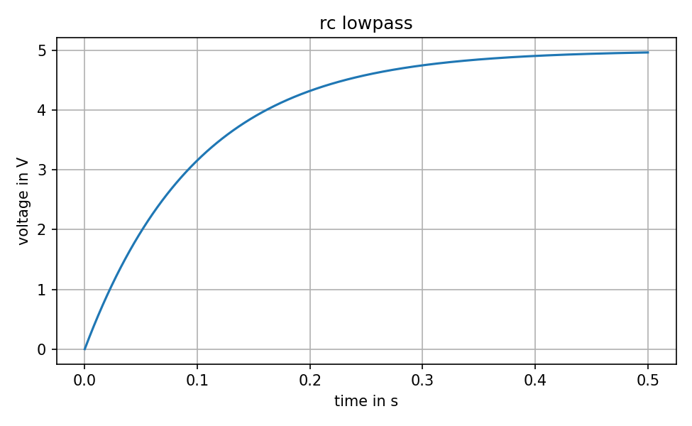
Physikalischer Hintergrund. Eine Induktivität \(L = 0.1\,\mathrm{H}\) in Reihe mit einem Widerstand \(R = 10\,\mathrm{\Omega}\) an einem 24-V-Industrie-Netzteil (z. B. eine Relais- oder Schützspule, die eingeschaltet wird). Der Strom durch eine Induktivität kann nicht springen.
\[G(s) = \frac{U/R}{\frac{L}{R}s + 1} = \frac{2.4}{0.01\,s + 1}, \qquad y(t) = 2.4\left(1 - e^{-100t}\right)\,\mathrm{A}\]
Zeitkonstante \(\tau = L/R = 0.01\,\mathrm{s}\) — zehnmal schneller als der RC-Tiefpass. Der Strom stellt sich auf \(I_\infty = U/R = 2.4\,\mathrm{A}\) ein.
CSV: csv/02.csv (0 … 0.05 s)
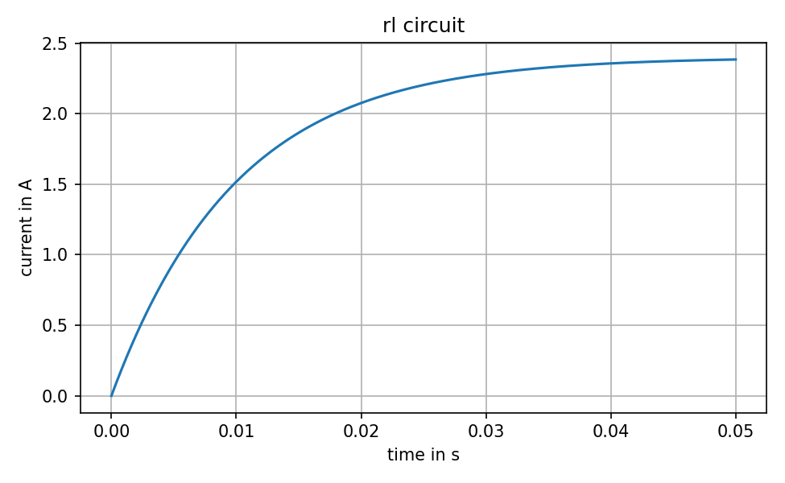
Physikalischer Hintergrund. Eine Masse \(m = 2\,\mathrm{kg}\) auf einer Feder \(k = 2000\,\mathrm{N/m}\) mit einem Dämpfer \(d = 20\,\mathrm{N\,s/m}\), z. B. ein kleines Maschinenteil auf einer weichen Lagerung. Ein Kraftsprung von \(F = 50\,\mathrm{N}\) (eine plötzliche Last) lenkt die Feder auf die statische Auslenkung \(x_\infty = F/k = 2.5\,\mathrm{cm}\) aus.
\[G(s) = \frac{F}{m s^2 + d s + k} = \frac{50}{2s^2 + 20s + 2000}\]
Mit \(\omega_n = \sqrt{k/m} \approx 31.6\,\mathrm{rad/s}\) und \(\zeta = d/(2\sqrt{km}) \approx 0.16 < 1\) ist das System unterdämpft: die Position überschwingt die 2.5-cm-Marke deutlich und schwingt mit \(\omega_d \approx 31.2\,\mathrm{rad/s}\) (\(\approx 5\,\mathrm{Hz}\)) nach, bevor sie sich einschwingt.
CSV: csv/03.csv (0 … 0.5 s)
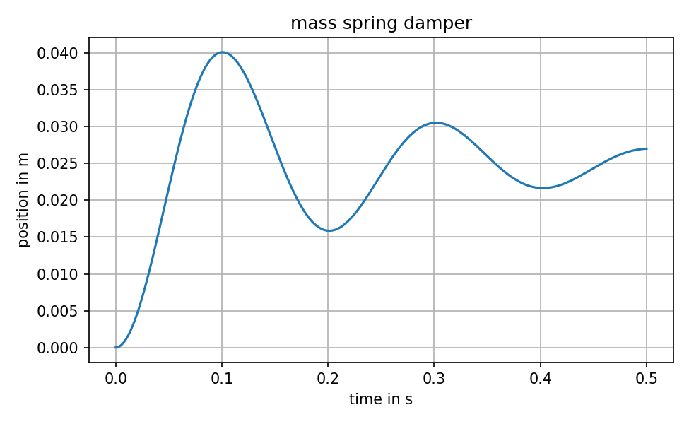
Physikalischer Hintergrund. Ein DC-Motor mit Trägheit \(J = 0.02\,\mathrm{kg\,m^2}\), viskoser Reibung \(b = 0.2\,\mathrm{N\,m\,s/rad}\), Ankerwiderstand \(R = 1\,\mathrm{\Omega}\) und Ankerinduktivität \(L = 0.05\,\mathrm{H}\), Drehmomentkonstante \(K_m = 0.05\,\mathrm{N\,m/A}\) und Gegen-EMK-Konstante \(K_e = 0.05\,\mathrm{V\,s/rad}\), an einer 12-V-Batterie. Das Motormoment beschleunigt die Trägheit; die Gegen-EMK koppelt die Drehzahl zurück in den elektrischen Kreis — daraus ergibt sich eine Übertragungsfunktion zweiter Ordnung:
\[G(s) = \frac{U K_m}{(Js + b)(Ls + R) + K_m K_e} = \frac{0.6}{0.001 s^2 + 0.03 s + 0.2025}\]
Beide Pole sind reell und negativ (\(\approx -10.3\) und \(-19.7\)), der Motor läuft also ohne Überschwingen auf \(\omega_\infty \approx 2.96\,\mathrm{rad/s} \approx 28\,\mathrm{rpm}\) hoch.
CSV: csv/04.csv (0 … 1.5 s)
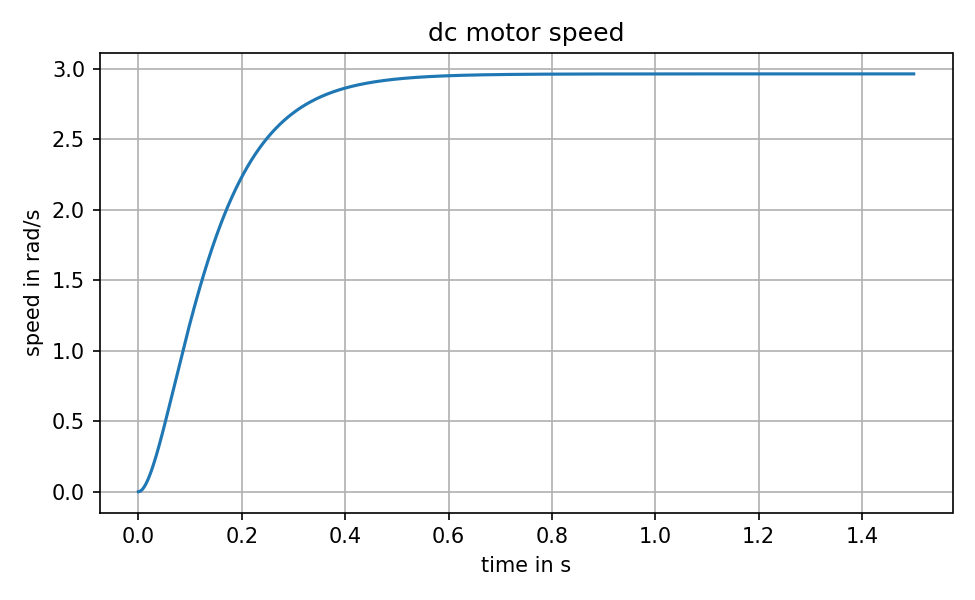
Physikalischer Hintergrund. Ein elektrisches Heizelement (\(P = 500\,\mathrm{W}\)), das einen Körper erwärmt, lässt sich als zwei in Reihe geschaltete Energiespeicher modellieren: die Heizung selbst (schnell, \(\tau_1 = 5\,\mathrm{s}\)) und die erwärmte Masse mit ihrer Wärmekapazität und ihrem Wärmeverlust an die Umgebung (langsam, \(\tau_2 = 60\,\mathrm{s}\)). Die Gesamtverstärkung ist \(K = 4\,\mathrm{K/kW}\).
\[G(s) = \frac{K P}{(\tau_1 s + 1)(\tau_2 s + 1)} = \frac{2}{(5s + 1)(60s + 1)}\]
Zwei reelle Pole in Reihe (PT2). Die Antwort ist s-förmig — flach am Anfang (Wendepunkt), typisch für thermische Prozesse — und der Körper erwärmt sich um \(+2\,\mathrm{K}\).
CSV: csv/05.csv (0 … 250 s)
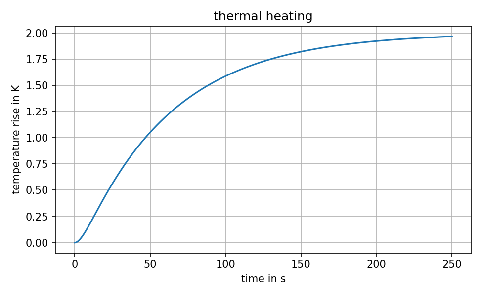
| System | Eingangssprung | Ausgang | Ordnung | Pole | Endwert | Charakter |
|---|---|---|---|---|---|---|
| RC-Tiefpass | 5 V | 0 → 5 V | 1 | \(-10\) | 5 V | PT1 |
| RL-Schaltung | 24 V | 0 → 2.4 A | 1 | \(-100\) | 2.4 A | PT1 (schnell) |
| Masse-Feder-Dämpfer | 50 N | 0 → 2.5 cm | 2 | \(-5 \pm j\,31.2\) | 2.5 cm | unterdämpft |
| DC-Motordrehzahl | 12 V | 0 → 2.96 rad/s | 2 | \(\approx -10.3,\ -19.7\) | 2.96 rad/s | überdämpftes PT2 |
| Thermische Heizung | 500 W | 0 → +2 K | 2 | \(-0.2,\ -0.0167\) | 2 K | PT2, s-förmig |
Physikalischer Hintergrund. Ein 1,4-t-PKW (\(m = 1400\,\mathrm{kg}\)) wird durch eine konstante Antriebskraft von \(F = 500\,\mathrm{N}\) beschleunigt, während ein linearisierter Fahrwiderstand (Luft + Rollreibung) von \(c = 25\,\mathrm{N\,s/m}\) der Bewegung entgegenwirkt. Das Newton-Gesetz liefert \(m\dot v + c v = F\).
\[G(s) = \frac{F}{m s + c} = \frac{500}{1400 s + 25}, \qquad y(t) = 20\left(1 - e^{-t/56}\right)\,\mathrm{m/s}\]
Zeitkonstante \(\tau = m/c = 56\,\mathrm{s}\). Der PKW erreicht asymptotisch \(v_\infty = F/c = 20\,\mathrm{m/s}\) (\(\approx 72\,\mathrm{km/h}\)) — genau die Strecke, gegen die ein Tempomat auf ebener Straße arbeiten muss.
CSV: csv/06.csv (0 … 200 s)
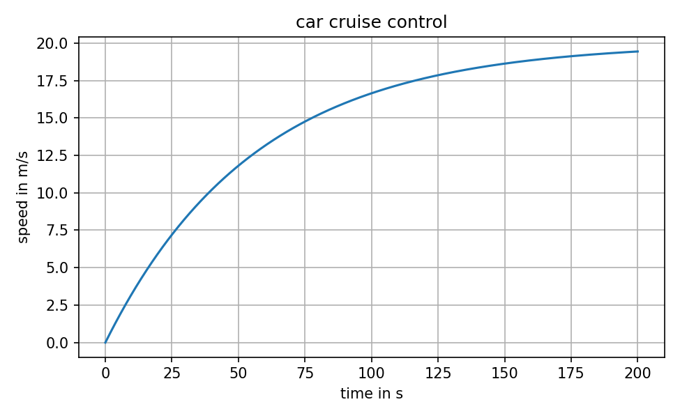
Physikalischer Hintergrund. Ein Prozessbehälter mit Querschnitt \(A = 0.5\,\mathrm{m^2}\) wird von einer Pumpe mit einem Zuflusssprung von \(q = 2\,\mathrm{L/s}\) gespeist. Das um den Arbeitspunkt linearisierte Ablaufventil hat den Leitwertswiderstand \(R = 40\,\mathrm{s/m^2}\), der Abfluss ist also \(q_{out} = h/R\). Massenbilanz: \(A\,\dot h = q_{in} - h/R\).
\[G(s) = \frac{q R}{A R s + 1} = \frac{0.08}{20 s + 1}, \qquad y(t) = 0.08\left(1 - e^{-t/20}\right)\,\mathrm{m}\]
Zeitkonstante \(\tau = A R = 20\,\mathrm{s}\). Der Füllstand stellt sich auf \(h_\infty = q R = 8\,\mathrm{cm}\) ein — ein klassisches PT1 der Verfahrenstechnik.
CSV: csv/07.csv (0 … 100 s)
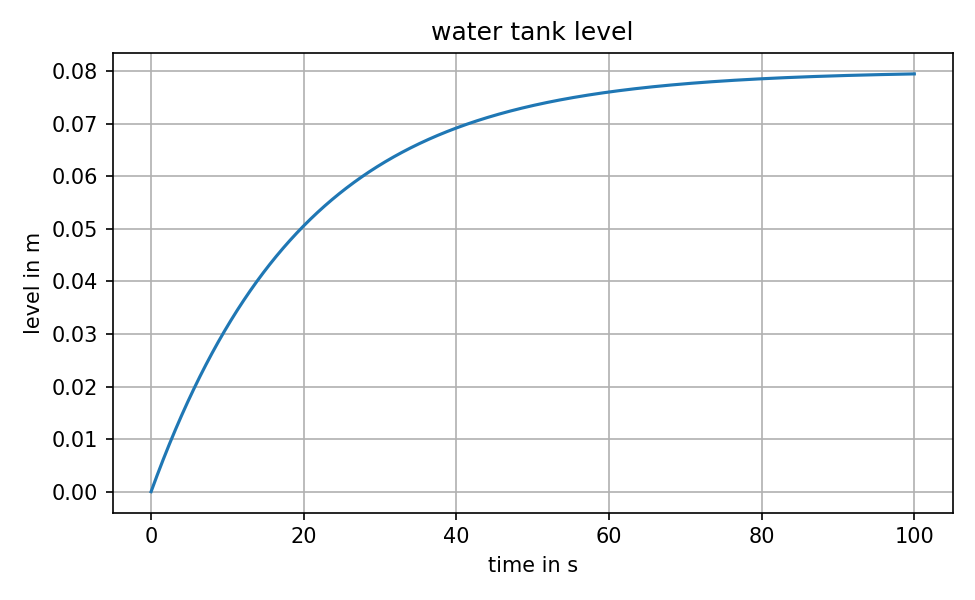
Physikalischer Hintergrund. Ein 12-V-auf-Niederspannung-Buck-Wandler mit LC-Ausgangsfilter (\(L = 47\,\mathrm{\mu H}\), \(C = 220\,\mathrm{\mu F}\)) an einer \(1\,\mathrm{\Omega}\)-Last. Ein Tastverhältnissprung von \(\Delta d = 0.1\) verschiebt die mittlere Ausgangsspannung um \(\Delta V = V_{in}\,\Delta d = 1.2\,\mathrm{V}\).
\[G(s) = \frac{V_{in}\,\Delta d}{LC\,s^2 + \frac{L}{R} s + 1} = \frac{1.2}{1.034\cdot10^{-8}\,s^2 + 4.7\cdot10^{-5}\,s + 1}\]
Eigenfrequenz \(\omega_n = 1/\sqrt{LC} \approx 9.83\cdot 10^3\,\mathrm{rad/s}\) (\(\approx 1.56\,\mathrm{kHz}\)); die gedämpfte Eigenfrequenz ist \(\omega_d \approx 9.57\cdot10^3\,\mathrm{rad/s}\). Dämpfungsgrad \(\zeta = \tfrac{1}{2R}\sqrt{L/C} \approx 0.23\): die Ausgangsspannung schwingt nach und überschwingt, bevor sie sich innerhalb weniger Millisekunden auf 1.2 V einstellt. Solch schnelle Übergangsvorgänge sind der Grund, warum Schaltnetzteile eine sorgfältige Regelkreis-Auslegung brauchen.
CSV: csv/08.csv (0 … 5 ms)
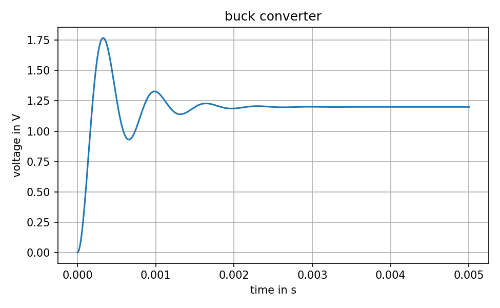
Physikalischer Hintergrund. Das Nomoto-Modell erster Ordnung ist die Standard-Niederfrequenznäherung der Gierdynamik von Schiffen. Für ein Frachtschiff mit Ruderwinkelverstärkung \(K = 0.05\,(\mathrm{deg/s})/\mathrm{deg}\) und Zeitkonstante \(T = 20\,\mathrm{s}\) dreht ein Rudersprung von \(\delta = 10\,\mathrm{deg}\) das Schiff.
\[G(s) = \frac{K\,\delta}{s\,(T s + 1)} = \frac{0.5}{s\,(20 s + 1)}, \qquad y(t) = 0.5\,t - 10\left(1 - e^{-t/20}\right)\,\mathrm{deg}\]
Der Integrierer (\(1/s\)) ist wesentlich: Der Kurs ist das Integral der Drehrate, die Sprungantwort ist also keine einschwingende Kurve, sondern eine Rampe. Nach dem Übergangsvorgang (\(t \gg T\)) dreht das Schiff mit konstanten \(0.5\,\mathrm{deg/s}\); bei \(t = 200\,\mathrm{s}\) beträgt der Kurs \(\approx 90\,\mathrm{deg}\) — das Schiff kreist, und genau dieses (stabile, aber nicht einschwingende) offene Verhalten schließt ein Autopilot zum Regelkreis.
CSV: csv/09.csv (0 … 200 s)
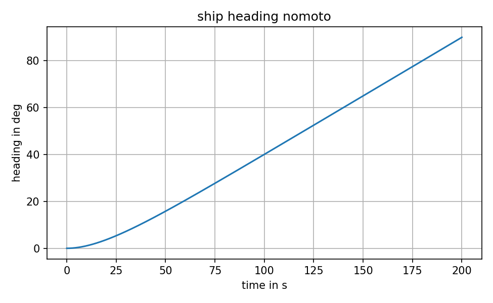
Physikalischer Hintergrund. Eine Heizung gibt einen Leistungssprung von \(P = 1\,\mathrm{kW}\) in einen Lüftungskanal ab. Die warme Luft braucht \(L = 8\,\mathrm{s}\) von der Heizung in den Raum, und der Raum selbst ist ein PT1 mit Verstärkung \(K = 2.5\,\mathrm{K/kW}\) und Zeitkonstante \(\tau = 120\,\mathrm{s}\) (Wärmekapazität von Luft + Wänden, Wärmeverlust an die Umgebung).
\[G(s) = \frac{K\,P\,e^{-L s}}{\tau s + 1} = \frac{2.5\,e^{-8 s}}{120 s + 1}\]
\[y(t) = 2.5\left(1 - e^{-(t-8)/120}\right)\sigma(t - 8)\,\mathrm{K}\]
Die Antwort ist die ersten 8 s exakt null (vor dem Transportweg kommt nichts an) und steigt danach exponentiell gegen \(+2.5\,\mathrm{K}\). Totzeit ist der Hauptgrund, warum Raumluftkreise nicht aggressiv geregelt werden können: der Regler sieht 8 s lang keine Reaktion auf seine Stellgröße.
CSV: csv/10.csv (0 … 400 s)
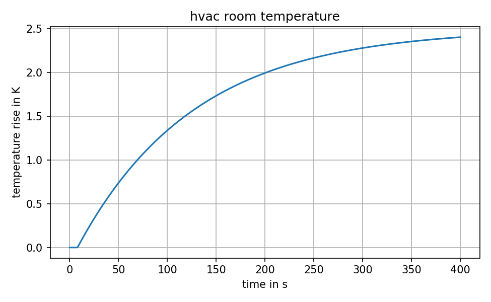
Physikalischer Hintergrund. Ein RLC-Reihenkreis mit \(R = 5\,\mathrm{\Omega}\), \(L = 1\,\mathrm{mH}\) und \(C = 10\,\mathrm{\mu F}\), z. B. das Ausgangsfilter einer Leistungselektronik-Stufe, angeregt durch einen 12-V-Versorgungssprung. Der Ausgang ist die Kondensatorspannung: die Induktivität speichert magnetische Energie und tauscht sie mit dem Kondensator aus, deshalb schwingt die Spannung ein, bevor sie sich einschwingt.
\[G(s) = \frac{U}{LC\,s^2 + RC\,s + 1} = \frac{12}{10^{-8}\,s^2 + 5\cdot10^{-5}\,s + 1}\]
\[y(t) = 12\left(1 - e^{-2500t}\left(\cos(9682\,t) + 0.258\,\sin(9682\,t)\right)\right)\,\mathrm{V}\]
Eigenfrequenz \(\omega_n = 1/\sqrt{LC} = 10^4\,\mathrm{rad/s}\) (\(\approx 1.6\,\mathrm{kHz}\)) mit Dämpfungsgrad \(\zeta = \tfrac{R}{2}\sqrt{C/L} = 0.25\): klar unterdämpft. Die Kondensatorspannung überschwingt die 12-V-Marke um etwa 44 % auf \(\approx 17.3\,\mathrm{V}\) und schwingt mit \(\omega_d \approx 9682\,\mathrm{rad/s}\) bei einer Abklingzeitkonstante von \(2L/R = 0.4\,\mathrm{ms}\) ein; nach etwa 2 ms stellt sie sich auf 12 V — dasselbe Nachschwingen wie beim LC-Filter des Tiefsetzstellers (System 8).
CSV: csv/11.csv (0 … 2 ms)
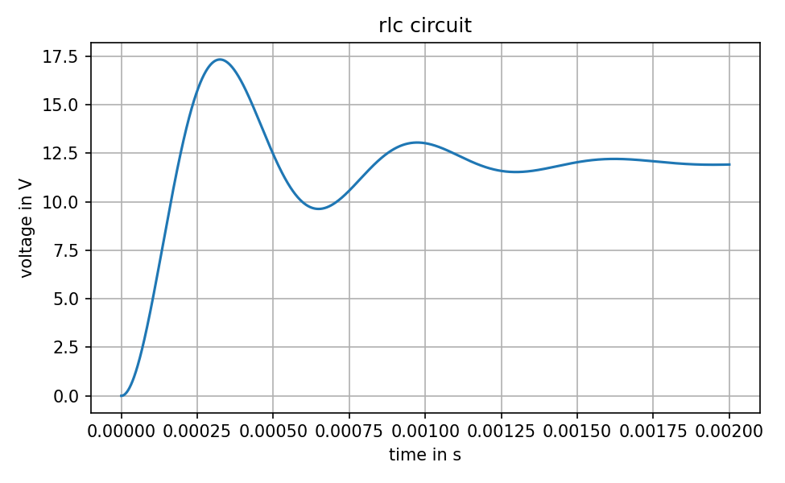
| Anwendung | Eingangssprung | Ausgang | Ordnung | Pole | Charakter |
|---|---|---|---|---|---|
| Tempomat | 500 N Antriebskraft | Geschwindigkeit (m/s) | 1 | \(-1/56\) | PT1, \(\tau = 56\) s |
| Wasserbecken | 2 L/s Zufluss | Füllstand (m) | 1 | \(-1/20\) | PT1, \(\tau = 20\) s |
| Tiefsetzsteller | \(\Delta d = 0.1\) | Spannung (V) | 2 | \(-2273 \pm j\,9568\) | unterdämpft, \(\zeta = 0.23\) |
| Schiffskurs (Nomoto) | \(10^\circ\) Ruder | Kurs (deg) | 2 | \(0,\ -1/20\) | integrierend (Rampe) |
| Raumluftanlage | 1 kW Heizleistung | Temperatur (K) | 1 + Totzeit | \(-1/120\), \(e^{-8s}\) | PT1 + 8 s Totzeit |
| RLC-Reihenkreis | 12 V | Spannung (V) | 2 | \(-2500 \pm j\,9682\) | unterdämpft, \(\zeta = 0.25\) |
Im Vergleich zu Teil I zeigen die Anwendungen Effekte, die in der Praxis zählen: sehr unterschiedliche Zeitskalen (ms bis Minuten), das Nachschwingen eines leistungselektronischen Wandlers, ein Integrierer im Schiffsmodell und reine Transporttotzeit in der Raumluftanlage.
Drei Systeme werden zusätzlich mit demselben Widerstandswert \(R = 1\,\mathrm{k\Omega}\) erzeugt (01_a, 02_a, 11_b, Skript generate_step_responses_1k_variants.py). Die Originale bleiben unverändert.
Identisch zu System 1: Der RC-Tiefpass verwendet bereits \(R = 1\,\mathrm{k\Omega}\) mit \(C = 100\,\mathrm{\mu F}\), die Sprungantwort ist also dieselbe Kurve — \(\tau = RC = 0.1\,\mathrm{s}\), 0 V auf 5 V.
CSV: csv/01_a.csv (0 … 0.5 s)
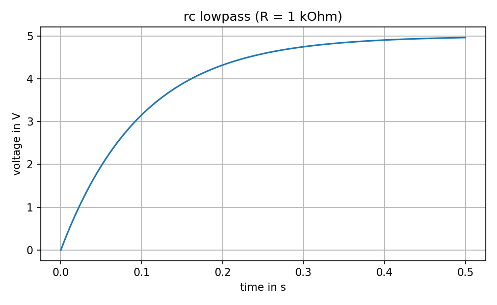
Mit \(R = 1\,\mathrm{k\Omega}\) statt \(10\,\mathrm{\Omega}\) fällt der Endstrom auf \(U/R = 24\,\mathrm{mA}\), und die Zeitkonstante schrumpft hundertfach auf \(\tau = L/R = 0.1\,\mathrm{ms}\): der Strom steigt 100-mal schneller an, aber nur auf ein Hundertstel der ursprünglichen 2.4 A.
\[G(s) = \frac{0.024}{10^{-4}\,s + 1}\]
CSV: csv/02_a.csv (0 … 0.5 ms)
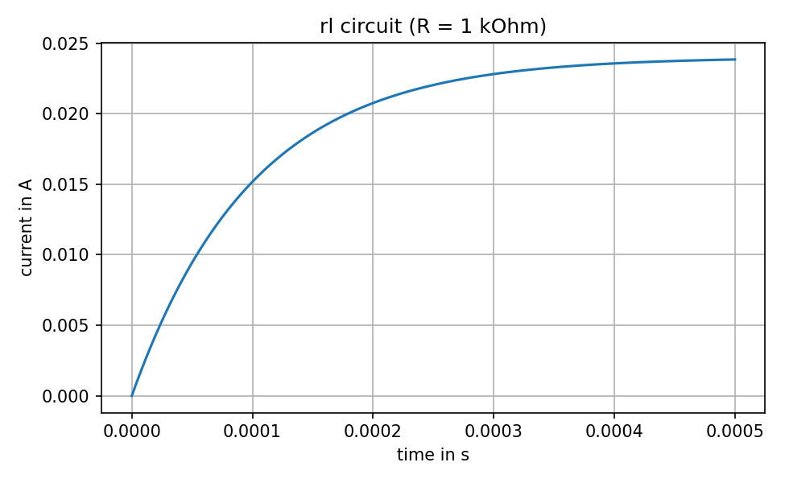
Der lehrreichste der drei: Das Anheben von \(R\) von \(5\,\mathrm{\Omega}\) auf \(1\,\mathrm{k\Omega}\) verschiebt die Dämpfung von \(\zeta = 0.25\) auf \(\zeta = 50\) — das Nachschwingen von System 11 verschwindet vollständig. Der Kreis ist stark überdämpft, mit Polen bei \(\approx -100\) und \(\approx -10^6\,\mathrm{rad/s}\); die Antwort wird vom langsamen Pol dominiert: ein träge exponentieller Anstieg auf 12 V mit \(\tau \approx 10\,\mathrm{ms}\) — langsamer als der ursprüngliche RLC-Kreis, obwohl \(L\) und \(C\) gleich bleiben.
CSV: csv/11_b.csv (0 … 50 ms)
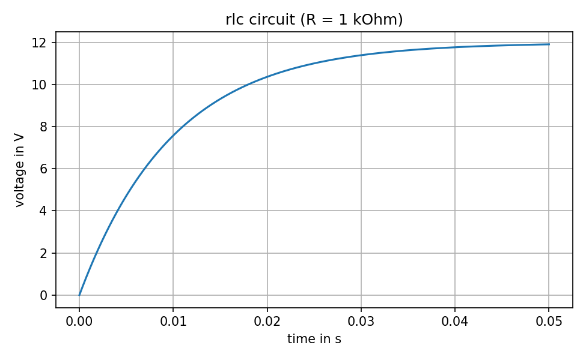
Jedes System in Teil I und II zeigt einen dominanten Effekt. Die fünf Systeme dieses Teils sind reale technische Anwendungen, in denen mehrere Effekte gleichzeitig wirken: eine rechtsseitige Nullstelle über einem Filter zweiter Ordnung (Hochsetzsteller), ein Integrierer hinter einer Transporttotzeit (Banddosierung), eine differenzierende Nullstelle über einem schwingfähigen PT2 (Motorlager), eine doppelte Verzögerung mit Totzeit (Fernwärme) und Coulomb-Reibung über einem schwingfähigen PT2 (Maschinenschlitten). Sie werden von generate_step_responses_multi_effect.py erzeugt.
Physikalischer Hintergrund. Ein Boost-Wandler, der eine 24-V-Schiene aus einer 12-V-Quelle regelt (z. B. ein batteriebetriebener LED-Treiber), mit Filterinduktivität \(L = 100\,\mathrm{\mu H}\), Ausgangskondensator \(C = 100\,\mathrm{\mu F}\) und Last \(R = 2\,\mathrm{\Omega}\) (\(\approx 12\,\mathrm{A}\)). Im Arbeitspunkt \(D = 0.5\) hebt ein Tastverhältnissprung von \(\Delta d = 0.02\) die mittlere Ausgangsspannung um \(\Delta V = V/(1-D)\cdot\Delta d = 0.96\,\mathrm{V}\).
\[G(s) = \frac{(1-D)\,V\,\left(1 - \frac{s\,L}{(1-D)^2 R}\right)} {LC\,s^2 + \frac{L}{R}s + (1-D)^2} = \frac{0.24 - 4.8\cdot10^{-5}\,s} {10^{-8}\,s^2 + 5\cdot10^{-5}\,s + 0.25}\]
Der Nenner liefert Pole bei \(-2500 \pm j\,4330\,\mathrm{rad/s}\) (\(\omega_n = 5000\,\mathrm{rad/s}\), \(\zeta = 0.5\)) — aber die Nullstelle des Zählers liegt in der rechten s-Halbebene, bei \(+5000\,\mathrm{rad/s}\) (\(= (1-D)^2 R/L\)).
\[y(t) = 0.96 - e^{-2500\,t}\left(0.96\,\cos(4330\,t) + 1.663\,\sin(4330\,t)\right)\,\mathrm{V}\]
Die Sprungantwort ist eine inverse Antwort: Der Ausgang bewegt sich zuerst in die falsche Richtung und fällt auf \(-0.27\,\mathrm{V}\) ab, bevor er umkehrt, auf \(+1.16\,\mathrm{V}\) überschwingt und sich auf \(0.96\,\mathrm{V}\) einstellt. Die Physik hinter dem Einbruch: Ein erhöhtes Tastverhältnis verkürzt das Dioden-Leitintervall, der an die Last gelieferte Strom sinkt sofort und der Kondensator entlädt sich; erst danach baut sich der Induktivitätsstrom auf und lädt den Kondensator wieder auf. Die nichtminimalphasige Nullstelle ist der Grund, warum ein Hochsetzsteller grundsätzlich schwerer zu regeln ist als der Tiefsetzsteller von System 8 — kein Regler kann den anfänglichen Einbruch aufheben, und die RHP-Nullstelle begrenzt die erreichbare Bandbreite.
CSV: csv/12.csv (0 … 3 ms)
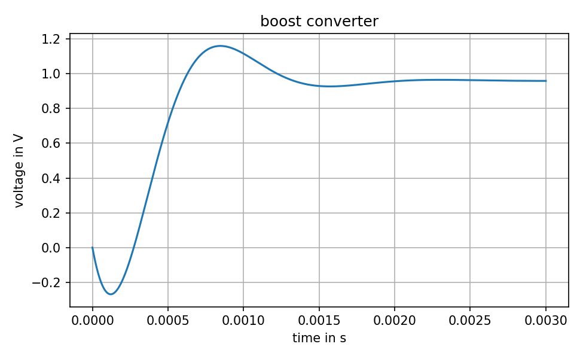
Physikalischer Hintergrund. In einer Asphalt- oder Betonmischanlage fördert eine Schnecke Sand mit \(q = 2\,\mathrm{kg/s}\) auf ein Förderband. Das Material braucht \(L = 30\,\mathrm{m}/2\,\mathrm{m/s} = 15\,\mathrm{s}\) über das Band, bevor es in das Wiegesilo fällt, dessen Inhalt das Integral des ankommenden Stroms ist.
\[G(s) = \frac{q\,e^{-L s}}{s} = \frac{2\,e^{-15s}}{s}, \qquad y(t) = 2\,(t - 15)\,\sigma(t - 15)\,\mathrm{kg}\]
Zwei Effekte multiplizieren sich: der Integrierer (das Silo summiert alles, was ankommt) und die Transporttotzeit (15 s lang kommt nichts an). Die Antwort ist exakt 15 s lang null und danach eine gerade Rampe von \(2\,\mathrm{kg/s}\) — bei \(t = 60\,\mathrm{s}\) sind 90 kg angekommen. Das kombiniert den Charakter von System 9 (Integrierer → Rampe) mit dem von System 10 (Totzeit → erst Stille). In der Dosierpraxis ist die Totzeit das dominante Problem: Um eine Zielmasse zu erreichen, muss die Zuteilung 15 s früher abgeschaltet werden, und jeder Fehler, der während der Totzeit passiert, kann erst korrigiert werden, wenn das Material ankommt.
CSV: csv/13.csv (0 … 60 s)
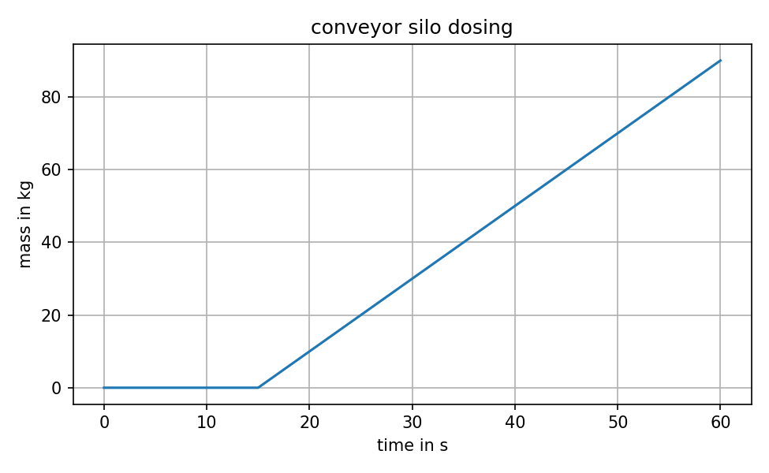
Physikalischer Hintergrund. Ein 300-kg-Verbrennungsmotor ruht auf drei Gummilagern; ein Lager trägt \(m = 100\,\mathrm{kg}\) Motormasse mit einer Steifigkeit von \(k = 10^5\,\mathrm{N/m}\) (etwa \(9{,}8\,\mathrm{mm}\) statische Einfederung durch die Eigenmasse) und einer Dämpfung von \(d = 630\,\mathrm{N\,s/m}\) (\(\zeta \approx 0.1\)). Beim Motorstart trifft eine Drehmoment-Stützkraft von \(F = 800\,\mathrm{N}\) auf das Lager. Interessant ist die Kraft, die das Lager an den Rahmen weiterleitet: \(f_T = k\,x + d\,\dot x\).
\[G(s) = \frac{k + d\,s}{m\,s^2 + d\,s + k} = \frac{800(k + d\,s)}{m\,s^2 + d\,s + k} = \frac{8\cdot10^7 + 504000\,s}{100\,s^2 + 630\,s + 10^5}\]
Pole bei \(-3.15 \pm j\,31.5\,\mathrm{rad/s}\) (\(\omega_n = 31.6\,\mathrm{rad/s} \approx 5\,\mathrm{Hz}\)) und eine differenzierende Nullstelle bei \(-k/d = -159\,\mathrm{rad/s}\) — der Dämpferanteil \(d\,\dot x\) in der übertragenen Kraft.
\[y(t) = 800 + e^{-3.15\,t}\left(80.1\,\sin(31.47\,t) - 800\,\cos(31.47\,t)\right)\,\mathrm{N}\]
Die übertragene Kraft steigt mit der Anfangssteigung \(d\,F/m = 5040\,\mathrm{N/s}\) — eine Feder allein würde im ersten Augenblick nichts übertragen; die differenzierende Wirkung des Dämpfers leitet den Stoß sofort weiter. Die Kraft überschwingt den 800-N-Sprung um 75 % auf \(1396\,\mathrm{N}\), schwingt mit 5 Hz nach und stellt sich exakt auf \(800\,\mathrm{N}\) ein: Ein Gummi-Lager überträgt statische Kraft vollständig — Schwingungsisolation wirkt nur oberhalb der Resonanz. Dies ist dieselbe \(k\)-\(d\)-\(m\)-Struktur wie in System 3, nur mit der zusätzlichen Nullstelle, die daraus entsteht, dass statt der Position die Kraft gemessen wird.
CSV: csv/14.csv (0 … 1.5 s)
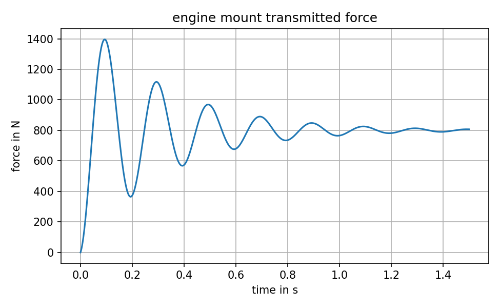
Physikalischer Hintergrund. Ein Fernwärmewerk erhöht seine Vorlauftemperatur um einen Sprung von \(6\,\mathrm{K}\). Die Übergabestation des Abnehmers ist über eine 600-m-Netzleitung mit Wasser bei \(2\,\mathrm{m/s}\) angeschlossen, der Sprung kommt also nach \(L = 300\,\mathrm{s}\) Totzeit an. Hinter der Totzeit folgen zwei Energiespeicher in Reihe: die Rohrwand mit dem Wärmetauscher (\(\tau_1 = 40\,\mathrm{s}\)) und das Gebäude mit Heizkörpern und Wärmemasse (\(\tau_2 = 300\,\mathrm{s}\)). Verteilverluste ergeben eine Gesamtverstärkung von \(K = 0.9\), der Raum stellt sich also um \(+5.4\,\mathrm{K}\) wärmer ein.
\[G(s) = \frac{K\,\Delta T\,e^{-L s}}{(\tau_1 s + 1)(\tau_2 s + 1)} = \frac{5.4\,e^{-300 s}}{(40 s + 1)(300 s + 1)}\]
\[y(t) = 5.4\left[1 - 1.154\,e^{-t'/300} + 0.154\,e^{-t'/40}\right] \sigma(t - 300)\,\mathrm{K}, \qquad t' = t - 300\]
Fünf volle Minuten passiert gar nichts, dann beginnt der s-förmige PT2-Anstieg wie in System 5 — Totzeit plus doppelte Verzögerung in einer Strecke. Diese Kombination (lange Totzeit und zugleich langsame S-Kurve) ist der Grund, warum Fernwärmekreise konservativ geregelt werden: Ein Regler, der während der 5 stillen Minuten aggressiv reagiert, überschwingt stark, sobald die Wirkung endlich eintrifft. Zusammen mit System 10 zeigt dieses System, wie stark allein die Totzeit die Regelung erschwert.
CSV: csv/15.csv (0 … 1800 s)
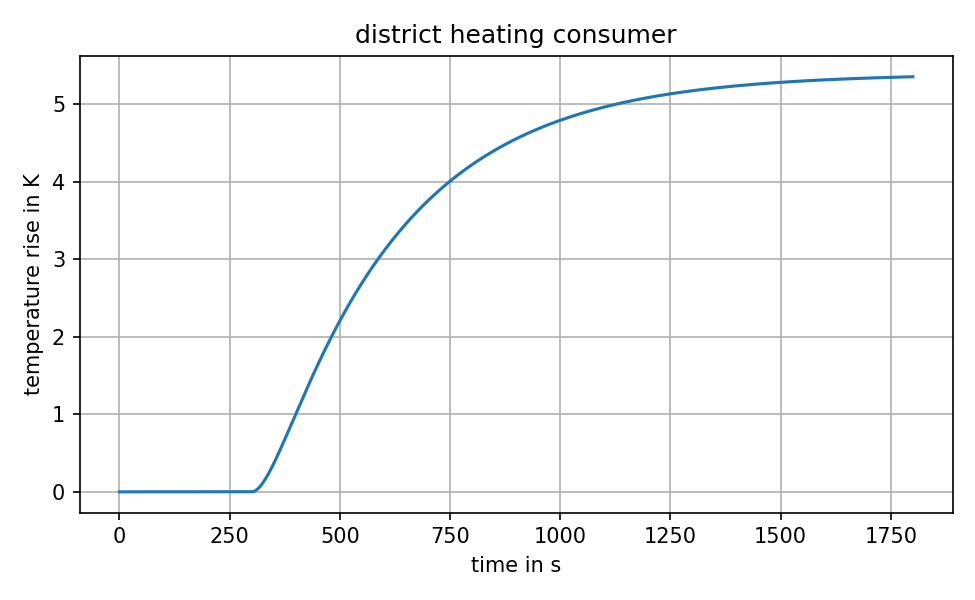
Physikalischer Hintergrund. Ein \(m = 40\,\mathrm{kg}\) schwerer Tisch eines Maschinenschlittens wird über einen Kugelgewindetrieb angetrieben, dessen axiale Nachgiebigkeit \(k = 10^6\,\mathrm{N/m}\) beträgt; die Führungen fügen viskose Reibung \(d = 60\,\mathrm{N\,s/m}\) und — entscheidend — Coulomb-Reibung von \(F_c = 60\,\mathrm{N}\) hinzu. Ein Servo-Kraftsprung von \(F = 200\,\mathrm{N}\) wird aufgebracht. Coulomb-Reibung wirkt der Bewegungsrichtung entgegen, \(\pm F_c\), das System ist also nichtlinear und hat keine Übertragungsfunktion — Superposition und der inverse-Laplace-Weg der anderen Systeme gelten nicht. Die Bewegungsgleichung (während der Bewegung) ist
\[m\,\ddot x + d\,\dot x + k\,x + F_c\,\operatorname{sign}(\dot x) = F,\]
und der Schlitten klebt dauerhaft fest, sobald \(\dot x = 0\) und \(|F - k x| \le F_c\). Dieses System wird deshalb numerisch integriert (RK4 mit Stick-Erkennung) in generate_step_responses_multi_effect.py — das einzige nicht-analytische Beispiel dieses Kapitels.
Die Antwort kombiniert zwei Effekte. Der linearisierte Teil wäre ein schwingfähiges PT2 (\(\omega_0 = \sqrt{k/m} = 158\,\mathrm{rad/s}\), d. h. 25 Hz, \(\zeta = 0.005\) — fast ungedämpft). Die Reibung fügt eine Totzone hinzu: Jede stationäre Antriebskraft unter \(F_c = 60\,\mathrm{N}\) erzeugt gar keine Bewegung, und der Schlitten kann überall innerhalb des Reibbandes \([(F-F_c)/k,\ (F+F_c)/k] = [140, 260]\,\mathrm{\mu m}\) zur Ruhe kommen. In der Simulation überschwingt der Schlitten auf \(278\,\mathrm{\mu m}\) (gegenüber dem idealen \(F/k = 200\,\mathrm{\mu m}\)), schwingt einmal zurück und klebt nach etwa 40 ms bei \(242\,\mathrm{\mu m}\) fest — mit den qualitativen Unterschieden zu jedem linearen System: Das Einschwingen geschieht in endlicher Zeit (kein asymptotischer Schweif, weil die Reibung pro Halbschwingung einen festen Energiebetrag entfernt), und die Endposition liegt in einem \(\pm F_c/k = \pm 60\,\mathrm{\mu m}\) breiten Fehlerband, das kein Proportionalregler schließen kann. Deshalb verwenden Präzisionsmaschinen vorgespannte, reibungsfreie Führungen, und deshalb verursacht Reibung Stick-Slip und Grenzzyklen in Positionierkreisen.
CSV: csv/16.csv (0 … 60 ms)
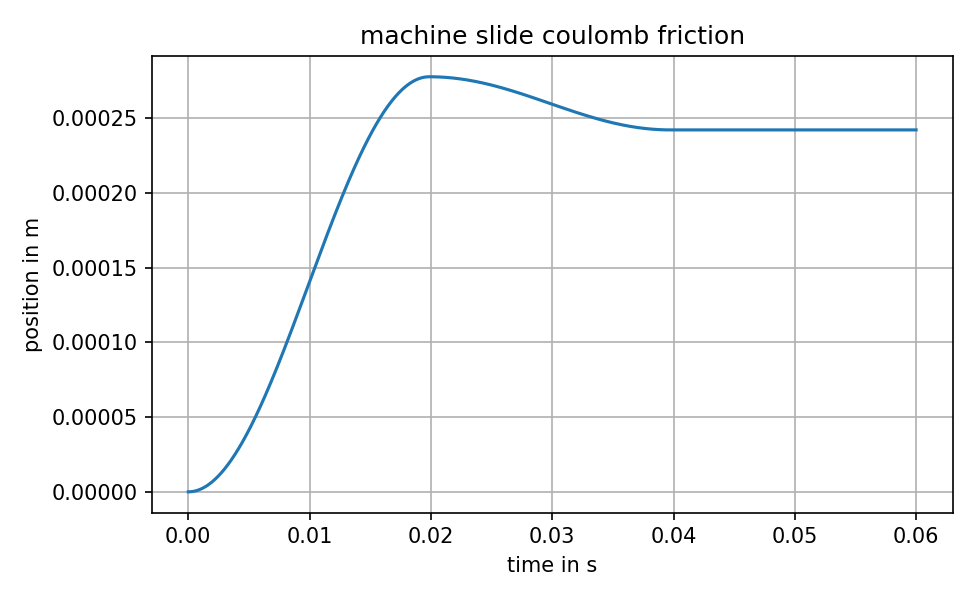
| System | Eingangssprung | Ausgang | Kombinierte Effekte | Pole / Nullstellen | Charakter |
|---|---|---|---|---|---|
| Hochsetzsteller | \(\Delta d = 0.02\) | 0 → 0.96 V | PT2 + RHP-Nullstelle | \(-2500 \pm j\,4330\); Nullstelle \(+5000\) | inverse Antwort (zuerst Einbruch) |
| Banddosierung | 2 kg/s | 0 → 90 kg (bei 60 s) | Integrierer + Totzeit | \(0\); \(e^{-15s}\) | 15 s Stille, dann Rampe |
| Motorlager | 800 N | 0 → 800 N | PT2 + differenzierende Nullstelle | \(-3.15 \pm j\,31.5\); Nullstelle \(-159\) | 75 % Überschwingen, volle statische Übertragung |
| Fernwärme | \(+6\) K Vorlauf | 0 → +5.4 K | PT2 + Totzeit | \(-1/40,\ -1/300\); \(e^{-300s}\) | s-förmig nach 5 min |
| Maschinenschlitten | 200 N | 0 → 242 µm | PT2 + Coulomb-Reibung | \(-0.75 \pm j\,158\) (linearisiert) | Totzone, endliches Einschwingen |
Während Teil I und II einzelne Effekte isolieren, zeigt Teil IV, was geschieht, wenn Effekte zusammenwirken: eine inverse Antwort, die kein Regler aufheben kann (RHP-Nullstelle), eine Rampe, die erst nach der Transporttotzeit beginnt, ein Kraftpfad, der durch eine differenzierende Nullstelle sofort steil ansteigt, eine S-Kurve, die um Minuten verzögert ist, und eine Totzone, die das glatte asymptotische Einschwingen in ein endliches Festkleben mit bleibendem Positionsfehler verwandelt.
Verwendet wird die Conda-Umgebung mtrs_env (Python 3.9, sympy, numpy, pandas, matplotlib):
conda activate mtrs_env
python generate_step_responses.py
python generate_step_responses_applications.py
python generate_step_responses_1k_variants.py
python generate_step_responses_multi_effect.pyDie Skripte regenerieren die sechzehn CSV-Dateien (beschreibende Kopien im Projektordner, kurznummerierte Kopien in csv/), eine eigene Grafik pro System im Ordner images/sprungantworten/ (die in diesem Kapitel eingebetteten Abbildungen) sowie die drei 1-kΩ-Varianten (01_a, 02_a, 11_b). System 16 wird numerisch integriert (RK4 mit Stick-Erkennung), weil Coulomb-Reibung keine Übertragungsfunktion zulässt; die Systeme 1–15 werden mit sympy analytisch invertiert. Die Skripte gehören zum MTRS-Datenprojekt „Step Response To Transfer Function“; die kombinierten Übersichtsgrafiken step_responses.png, step_responses_applications.png und step_responses_multi_effect.png werden weiterhin geschrieben, in diesem Kapitel aber nicht verwendet.